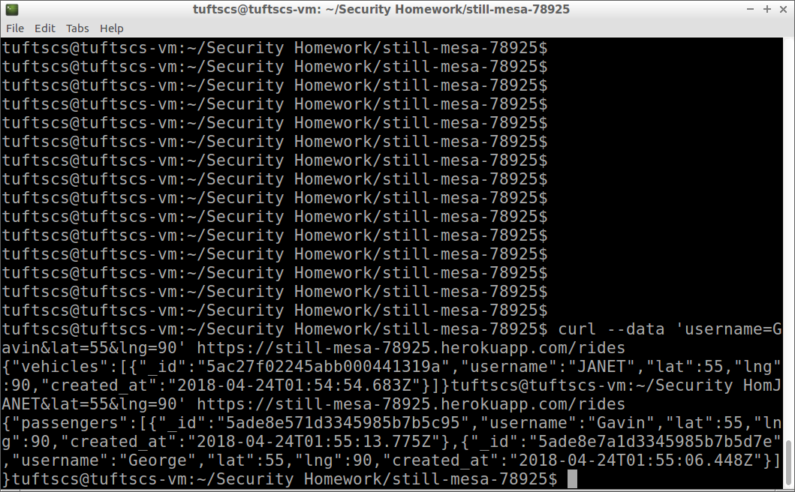
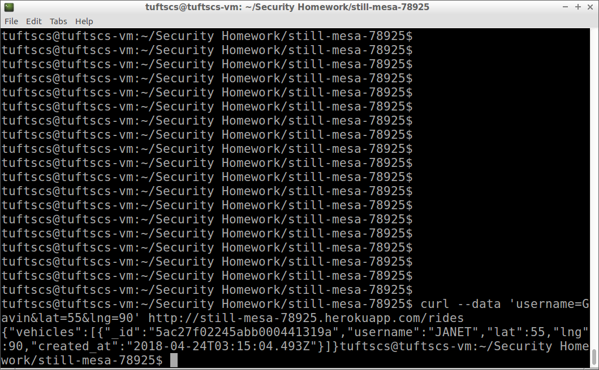
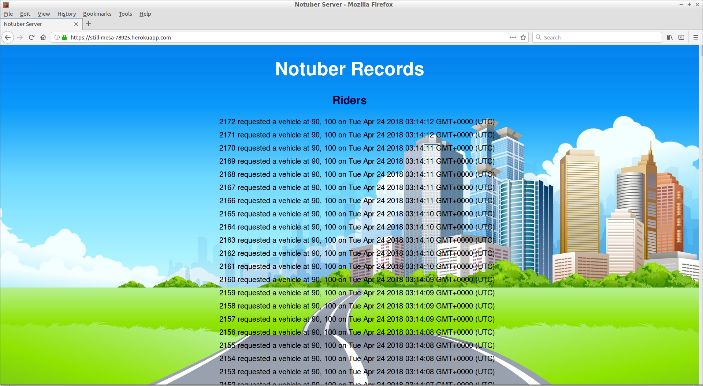
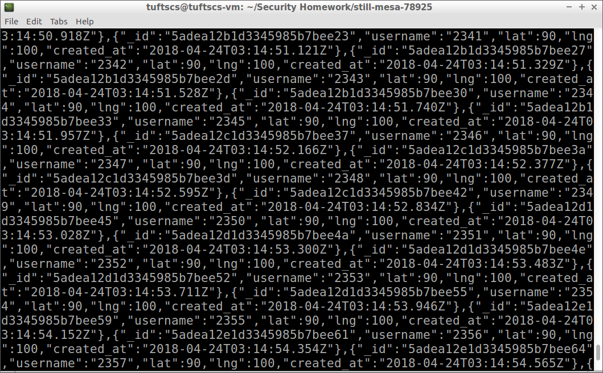

I have been hired to find vulnerabilities in the implementation of Samantha Stolzenbach's ride sharing service. This service uses Heroku. The drivers and riders information is stored using MongoDB.
I attempted to use cross site scripting to inject javascript into the webpage, but after it did not work I looked at the source code of the webpage and found that all of the greater thans and less thans had been sanatized to "<" and ">" using an ejs file which is a framework for html files, so cross site scripting is now for the most part impossible (at least for my knowledge).
Next I attempted to use MongoDB injections to gain access to many users information but I realized that this was not possible because in the vechile.json get the user checks the given username against a static array rather than in the actual database. For this section I attempted to use Burp Suite.
Then I analyzed the process through which information was actually given to the website and given by the website. This led me to my conclusion about the issue regarding the same-origin policy. This also led me to realize that the website did not require information to be sent with an HTTPS request.
Lastly I wrote a shell script that sent a lot of user information to the website to test if I would get shut out after a large number of requests in a small amount of time.
Overall many of the obvious vulnerabilies that one would expect a website to have were covered with this program. Cross site scripting and database injections are almost impossible because of the security precautions that have been taken. What was wrong was first that this website does not check who is requesting information from the website so virtually anybody can access any data from the website. Second, this website does not make sure that the connection to it is encrypted to the information can be accessed by an intermediary. Lastly, this website does not limit the amount of data that one user can input in a period of time which could cause the website to become very cluttered and potentially could bring the website down. The fixes of all of these problems are all fairly easy to fix as I outline below.
The first issue that I found is that the information of both the users and the drivers are accessable to anyone on any device. The website does not check where the information request is coming from, so any website or person can request data, and because the usernames of either the drivers or passengers (depending on what you intially put in) is displayed, one can just input the opposite kind of username and receive the information of everyone.
I found this issue when I realized that every user has access to all the usernames of both the passengers and drivers, so if a malicious passenger wanted to get the locations of all of the other passengers this is easily achieveable. This is a moderate to severe issue because a lot of information is available, but none of it is extremely critical.
To fix this issue first off I would not return the usernames in the JSON string that is returned upon a successful request. The drivers only need to know a basic name for the passengers and their location and same for the passengers, displaying their actual username is useless and only allows for breaches. Also they could just implement a password system to make it so that knowing the username only allows users access to information. Also I would make sure that the website checks each request to make sure that is a trustworthy source to give information to.
The second issue that I found is that the this website accepts request from HTTP requests in addition to HTTPS requests. As can be seen by the picture below, I requested information from the website and the request went through even though the link that I provided used HTTP. This issue is moderate to severe because using HTTP means that the connection is not encrypted which makes it much easier for an intermediary to get the information that is being passed.
To fix this issue I would recommend the website only accepting requests from HTTPS requests rather than not descriminating. Also make it so that requests to access the website through HTTP redirect to HTTPS.
Lastly I found that as a user I had the power to make unlimited requests to the website. I wrote a script that made thousands of requests in only a minute or so. Due to this both the actual website along with the data that the drivers see can be rendered completely useless. With all of the data being obscured by the data that I am sending drivers will not be able to actually parse through the data and see who the actual drivers are. In addition to this allowing one address to have unlimited requests makes things like DDOS attacks much easier. Overall this issue is moderate as it does not actually pose a great threat to the website but rather is mostly an aesthetic issue.
The website being overloaded with requests.
The data that the driver sees being overloaded with requests.
To fix this issue I would just make sure that one IP can only make so many requests in a certain amount of time. After they make that many requests they should have to wait a certain period of time before making another request.
Overall the security of this website is fairly good, covering things like cross site scripting and database injections. My main concern was with restricting user requests. At this point users can make requests from anywhere, through an unencrypted connection, and make an unlimited amount of requests. These vulnerabilities pose a big problem for this website but overall can be fixed relatively easily. In the future I would recommend making sure that users are heavily restricted in what information they are able to access through the regular function of the website. Users should not be trusted so making sure that they are using the website as it is intended is important.